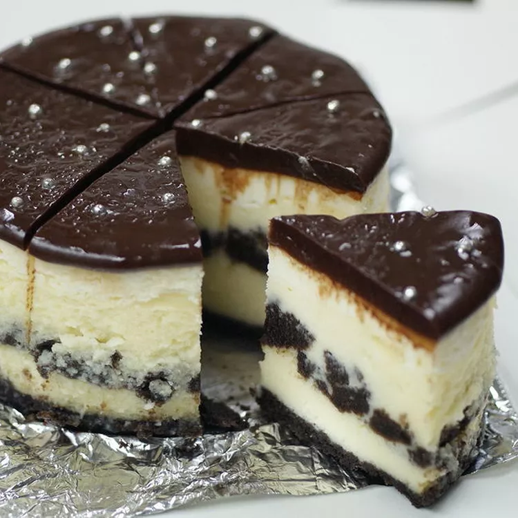

Recipe for Chocolate Cookie Cheesecake

Description
What's better than cheesecake with a chocolate-cookie crust? I don't
know what to say about this recipe other than it is decadent and hard to resist.
Anyone young or old will absolutely love this.
Ingredients
Crust
- 2 cups chocolate sandwich cookie crumbs
- ¼ cup packed brown sugar
- 2 tablespoons butter, melted
- 1 teaspoon ground cinnamon
Cheesecake
- 2 pounds cream cheese, softened
- 1 ½ cups white sugar, divided
- ⅓ cup heavy whipping cream
- 2 tablespoons all-purpose flour
- 2 teaspoons vanilla extract, divided
- 4 large eggs
- 1 ½ cups chocolate sandwich cookie crumbs
- 16 ounces sour cream
Chocolate Topping
- 1 ½ cups semisweet chocolate chips
- 1 cup heavy whipping cream
- 1 teaspoon vanilla extract
Directions
- Preheat the oven to 350 degrees F (175 degrees C).
- Make the crust: Combine cookie crumbs, brown sugar, melted butter,
and cinnamon in a medium bowl; firmly press mixture evenly onto the bottom and
1 inch up the sides of a 10-inch springform pan.
Bake in the preheated oven for 5 minutes; set aside.
- Prepare the cheesecake: Beat cream cheese in a large bowl until smooth. Gradually mix in 1 1/4 cups sugar,
heavy whipping cream, flour, and 1 teaspoon vanilla. Beat in eggs, one at a time, beating after each addition.
Pour 1/3 of the batter into the prepared pan.
Top with cookie pieces; pour in remaining batter.
- Bake in the preheated oven for 45 minutes. Remove cake from the oven.
- Combine sour cream, remaining 1/4 cup sugar, and remaining 1 teaspoon vanilla; spread evenly on cheesecake.
Continue baking for 7 minutes. Turn oven off, leaving cheesecake in for an additional 30 minutes.
Remove cheesecake and let cool completely on a wire rack.
- Make the chocolate topping: Combine chocolate chips and heavy
whipping cream in a saucepan; stir over low heat until chocolate melts, then stir in vanilla.
Pour mixture over cheesecake while still warm.
- Refrigerate before serving, at least 8 hours or overnight.
Remove about 1/2 hour to 1 hour before serving and remove the ring from the springform pan.